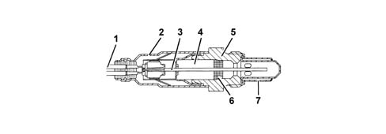
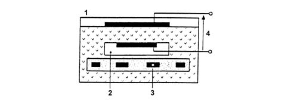
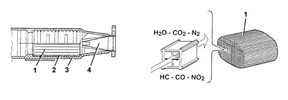

OPERATION
- Path
- Descriptions > 10 ENGINE > 1080 EMISSION CONTROL SYSTEM > 1080B EXHAUST EMISSION CONTROL SYSTEM > OPERATION
- Kind
- system description
- Applies to
- engines: 3.0 V6, 3.2 V6; all production periods
- Interactive page
- https://sloeber94.github.io/elrnDB-lThss/en/#/615932
Applies to: engines: 3.0 V6, 3.2 V6; all production periods
LAMBDA SENSORS
These planar sensors are fitted: on the two catalytic preconverters and the two catalytic converters. They inform the injection control unit about combustion progress (stoichiometric ratio).
The upstream sensors monitor concentration and are known as the 1st loop (closed loop of upstream sensor).
The sensors downstream of the catalytic converter are used to for converter diagnostics and to fine-tune 1st loop control parameters.
The second loop is therefore adaptive to make up for production discrepancies and slight drift that upstream sensor responses could experience due to ageing and contamination.
This control is known as 2nd loop control (downstream sensor closed loop).
The electronic control unit identifies mixture composition (lean or rich) from the lambda sensor output voltage.
This adjusts injected fuel quantity to ensure optimum mixture composition (%lgr; = 1 to create ideal conditions for treatment of exhaust gas in the catalytic converter.
If the mixture is too rich (%lgr; %lt; 1) fuel quantity must be reduced and if the mixture is too lean (%lgr; %gt; 1), fuel quantity must be increased.
- a, Righ mixture (not enough air).
- b, Lean mixture (too much air).
The lambda sensors are in contact with exhaust gases and generate an electrical signal with voltage dependent on oxygen level in the gas.
This voltage changes abruptly when mixture concentration deviates from a value of %lgr; = 1.
The injection control unit manages lambda sensor heating in proportion with exhaust gas temperature.
This avoids thermal shocks to the ceramic case due to contact with condensed water present in exhaust gas when the engine is cold.
The measurement chamber and heater are built into a planar (laminated) ceramic element. This offers the benefit of fast chamber heating to allow closed loop control (%lgr; = 1) within 10 seconds of engine start-up.

- 1, Connection cable.
- 2, Protective sleeve.
- 3, Planar sensor element.
- 4, Ceramic mount pipe.
- 5, Sensor seat.
- 6, Ceramic gasket.
- 7, Protective pipe.
The lambda sensor works on the principle of an oxygen concentration chamber with solid electrolyte.
The measurement chamber surfaces are coated with microporous layers of noble material.

- 1, Exhaust gas.
- 2, Reference air passage.
- 3, Heater.
- 4, Lambda sensor voltage.
Specifications:
- Fuel system: 12 V
- Internal resistance: 0.5 %divide; 1 kOhm.
CATALYTIC CONVERTER
The three-way catalytic converter makes it possible to keep down the levels of the three pollutant gases in the exhaust gases at the same time:
- unburnt hydrocarbons (HC);
- carbon monoxide (CO);
- nitrogen oxides (NOx).
Two types of chemical reaction take place inside the converter:
- oxidation of CO and HC to carbon dioxide (CO2) and water (H2O);
- reduction of NQx to nitrogen (N2).
The converter consists of a structure, a metal gauze suppoart to dampen impacts and vibrations and a stainless steel outer casing that is resistant to high temperatures and atmospheric agents.
The honeycomb structure is made from a ceramic material covered in an extermely thin layer of catalytically active substances, platinum or rhodium, which accelerated the chemical decomposition of the harmful substances contained in the exhaust gases which, when passing through the core cells at temperatures above 800°C ¸ 350°C, activate the catalyzers setting off the oxidation/reduction reactions.
A perforated steel cone improves the diffusion of the exhausts gases in the ceramic core cells to ensure the optimum efficiency and lifespan of the catalyzer.

- 1, One-piece ceramic structure.
- 2, Metal support.
- 3, Outer casing.
- 4, Perforated steel cone.